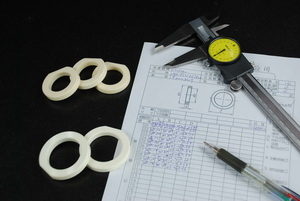

※以下為圖文編輯器，可由後台新增/編輯。
Pan World :
A wide range magnetic driven pump manufacturer who looks for an Agent or Distributors world wide.Established in 1992, Pan World is rapidly becoming a dominant market force in the global magnetic driven pump industry as Pan World offer a wide range of high quality pump with reasonable price owned the well reputation from market. Founded and headquartered in Japan, sister companies set up as World Wide.

Quality is the priority
Quality is the priority of Pan world products which could be satisfied with all distributors and customers who research right product for the best solution